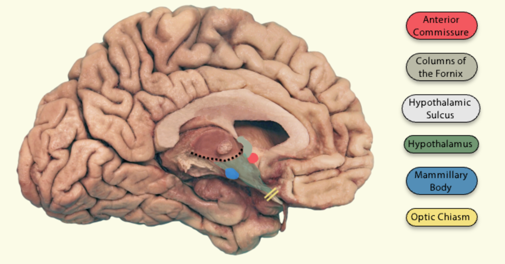

The thalami are bilateral deep brain structures mostly composed of grey matter. They lie on each side of the brain, just superior to the midbrain, and form the floor of the lateral ventricles.
Each thalamus is made up of several nuclei which are responsible for a number of functions, such as relaying sensory and motor information between the cortex and the brainstem, regulating sleep and wakefulness, aiding learning and episodic memory, and more.
SourcesThe hypothalamus is a deep brain center that acts as a control center for the body’s endocrine, autonomic and somatic systems. Some examples of its function includes regulating the concentration of a number of hormones, which then go onto regulate functions like feeding, body temperature, reproduction, growth and development, water balance and more.
The hypothalamus is located just inferiorly to the thalamus, separated by the superior hypothalamic sulcus, and together both structures form the lateral walls of the third ventricle.
